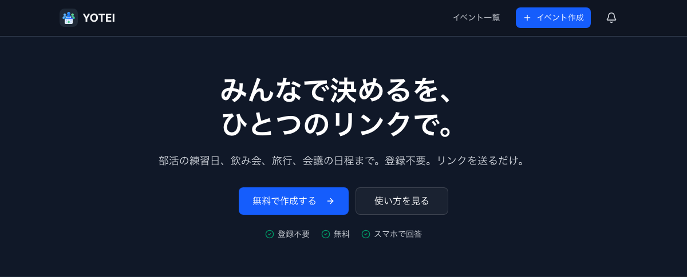

みんなで決めるを、
ひとつのリンクで。
日程調整と出欠確認、お店決めの投票、アンケートをまとめて扱える予定調整アプリです。候補を作ってリンクを送ると、登録なしで答えてもらえます。

作った理由
「飲み会いつにする？」「会議できる日ある？」。候補日を並べて、返信を待って、集計して、「やっぱこの日は無理」が出て、また集計する。予定調整はどのコミュニティでも必ず発生するのに、これを繰り返すのはかなり消耗します。
LINEやDiscordでやると、メッセージは流れるし、集計は手作業です。既存の調整サービスも使っていましたが、一番気になっていたのは決まったあとでした。
決まったあと、結局またGoogleカレンダーに入れる。
なので、候補を集めるだけでなく、決まったらすぐ動けるところまでを作ることにしました。
こだわったところ
ログインなしで使えること
最初から絶対条件でした。一度しか参加しない人も多いので、そのたびに登録を求めると離脱してしまいます。リンクを開けばそのまま回答でき、あとから直せて、他人には編集されない。そのためにゲストIDと編集キーの仕組みを設計しました。
△があること
「行けるかも」「仕事次第」「時間による」は実際によくあります。○と✕だけだと主催者が判断しづらいので、△を入れています。人間の予定はそんなに綺麗に決まらない、という前提です。
日程も投票も同じ画面で扱えること
「いつにする？」「どこにする？」「何食べる？」は、たいていセットで出てくるからです。
決めたあとも同じリンクで済むこと
主催者が候補を確定すると、参加者は回答したときと同じリンクで結果を確認できます。Googleカレンダーへの追加やDiscord通知でも、確定した候補がそのまま使われます。
これから
日程調整のツールというより、人が何かを決めるためのUIとして育てていきたいと思っています。
くわしくは記事にも書きました。YOTEIを公開したときの話、予定の確定機能を実装した話
Next.js / React / TypeScript / Tailwind CSS / Firebase Authentication / PostgreSQL / Prisma / Cloudflare / Google Cloud Run